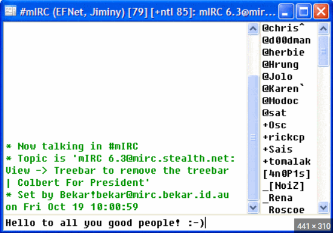
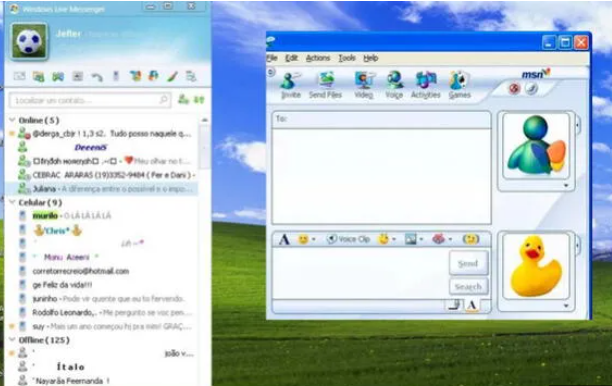
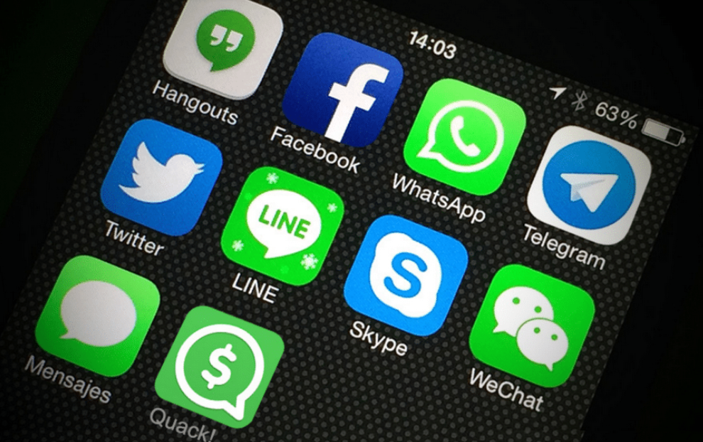
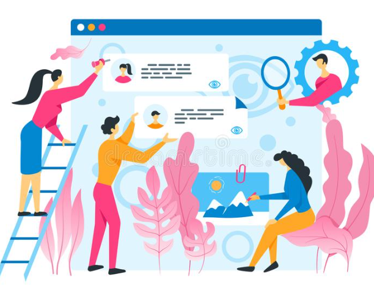
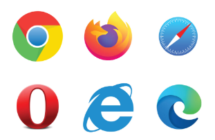

Uses of Internet
The Internet is fundamentally a communications tool.
Email is one of the most fundamental internet communication tools. Email is available from many free services, such as Microsoft, Google and Yahoo. Emails are required to sign up for many services online nowadays and it’s generally assumed that everyone has at least one email address.
Internet Relay Chat
Internet Relay Chat developed in the 1980s is of the earliest chat tools on the internet and it’s still in use today for recreational purposes, coordinating work and education teams and handling technical supports.
Instant Messaging Services
Instant Messaging Services became popular in the 1990s and through the use of ICQ, AOL Instant Messenger, MSN Messenger and Yahoo Messenger it allowed people to stay in touch around the world without any added cost, as users already paid to connect to the internet.
Messaging Apps
Smart Phone Messaging Apps a new breed of messaging tools, such as WhatsApp, Facebook Messenger and simple based text messaging. Microsoft Teams has become popular in many companies and colleges as a way to share information without picking up the phone or drafting an email.
Message Boards
Internet Message Boards is grouped discussion concept introduced for people that have things in common such as hobbies, hometowns, interests etc. These groups are created on platforms such as Facebook, Reddit or independent forums on special interest sites.
World Wide Web
The World Wide Web is a tool that every major business, organisation and government agency have. It’s used for everything, from shopping to checking the weather to accessing other ways to communicate online. User then access the web though specialized programmes called web browsers, such as Microsoft Edge, Google Chrome, Mozilla Firefox and Apple Safari which are available for computers and other devices such as smart phones and tablets.
Social Media
Social Networking Tools - Facebook, Twitter, Instagram, Snapchat, Linked in are social networking services communication tools enabling people to connect, share, follow and post updates about their lives.
Conference Communication Platforms
Microsoft Teams, Skype, google Hangouts, Apple FaceTime, Facebook Messenger are some of the popular internet video call and conference communication platforms. These can be set up through an email or a phone number. Video chat facilities are also built into office messaging tools enabling people to have video and audio chats.
Research Using the Internet
Information has been playing a vital role in present era. After the creation of Internet, it is growing day by day, covering all the fields related to knowledge. The internet is a combination of several media technologies and an electronic version of newspapers, magazines, books, catalogs, bulletin boards and much more. Its helpful tool for learners and researchers to gain information.